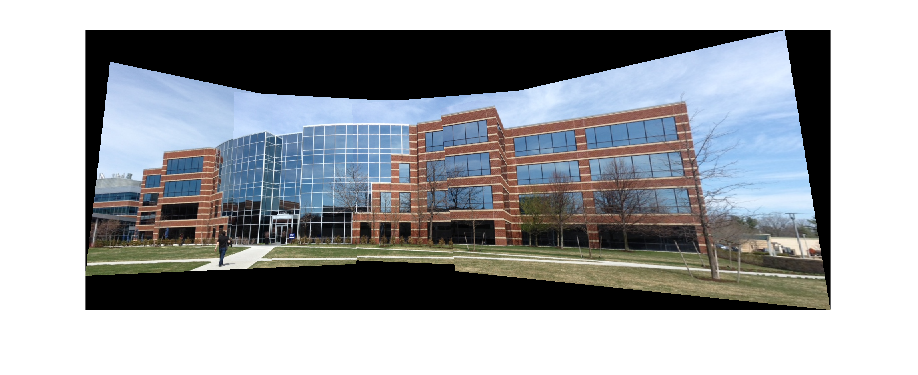
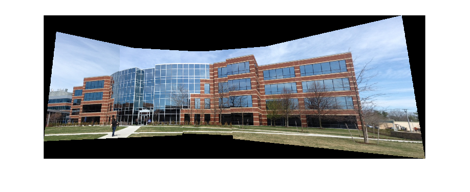
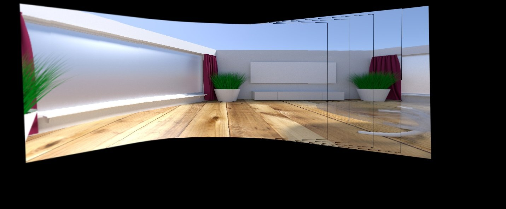

Multiple Image Stitching
I must say, even I was enjoying while developing this tutorial . Something about image perspective and enlarged images is simply captivating to a computer vision student (LOL) . I think, image stitching is an excellent introduction to the coordinate spaces and perspectives vision. Here I am going to show how to take an ordered set of many images, (assuming they have been shot from left to right direction) .
So what is image stitching ? In simple terms, for an input group of images, the output is a composite image such that it is a culmination of scenes. At the same time, the logical flow between the images must be preserved.
For example, consider the set of images below. (Taken from matlab examples). From a group of an input montage, we are essentially creating a singular stitched image. One that explains the full scene in detail. It is quite an interesting algorithm !
 
Topics being covered The implementation will be carried out in python programming language.
- Reading multiple images ( in order)
- Finding logical consistencies within images (this will be done using homography).
- Stitching Up images.
In need for any literature reference, please refer this paper by Mathew Brown
Let’s begin …
Let’s first understand the concept of mosaicking or image stitching. Basically if you want to capture a big scene. Now your camera can only provide an image of a specific resolution and that resolution , say 640 by 480 , is certainly not enough to capture the big panoramic view. So , what one can do is capture multiple images of the entire scene and then put together all bits and pieces into one big mat of images. Yes, it seems good .. right ! Such photographs , which pose as an ordered collection of a scene are called as mosaics or panoramas. The entire process of acquiring multiple image and converting them into such panoramas is called as image mosaicking. And finally, we have one beautiful big and large photograph of the scenic view.
Another method for achieving this, is by using wide angle lens in your camera. What a wide angle lens does, is effectively increase your field of view. The output, will differ (obviously). But for the purposes of this tutorial, let’s get into how to create panoramas using computers and not lens :P
Setting up the environment
Please note that your system is setup with Python 2.7 (Code implementation is in python2.7 if you have other versions, please modify the code accordingly) and OpenCV 3.0 . We will be using OpenCV’s helper utilities for reading images, writing images and conversion of color spaces. Once the images are obtained, the entire computation of the panorama will be done using a home brewed function. This blog article is divided into three major parts.
* Input, read and process images : image paths from text files. Each textfile contains the list of paths to each image. Make sure that the paths are in left_to_right order of orientation.
* Computation relative orientation of images w.r.t each other : pairwise
* The stitching / mix and match module : which essentially joins the two images at a time
Algorithm
The algorithm for performing image stitching is pretty straightforward.
1 2 3 4 5 6 7 8 9 | images [] <-- Input images
Assuming, that the center image is no_of_images/2
let centerIdx = length(images)/2
for each images[] at positions 0 -> centerIdx :
perform leftward stitching
for each images[] at positions centerIdx -> length(images):
perform rightward stitching
|
The output will be a complete mosaic of the input images.
Some Constraints The algorithm is time consuming, due to the number of iterations involved, it is best that hte input number of images is not too high or not of very high resolution (eg. 4000x3000). My implementation is based on a 2 GB RAM computer having intel i3 processor (Not tested it on my machine yet !). Feel free to upgrade/scale this model using higher specs, or maybe GPU’s .It’s never too late to try.
Project Architecture :
|_ code -|
| |-- pano.py
| |-- txtlists-|
| |--files1.txt ....
|
|_ images - |
| |- img1.jpg
| |- abc.jpg
| .... and so on ...
Click here to check out the code on Github
The project architecture is as follows. The code directory contains the main pano.py file. Also it contains a txtlists/ directory which contains files having the paths to images in the panorama. These images are individually stored inside images/ directory
In this tutorial, I will be using images from PASSTA Datasets. It contains 2 datasets, Lunchroom and Synthetic. Also, to test, I will be using images from Mare’s Computer Vision blog. . I’ll be using daeyun’s test hill images as well. and tsherlock too !! (For respective usage and citations , take a look at the references)
Now the real part.
To understand either of the leftward stitching or rightward stitching module, first let’s get some vision concepts straight. They being:
- *Homography : Oh I love this !
- *Warping : Cause, without warping, homography would feel a bit lonely
- *Blending : Cause intensity differences are a bit too mainstream
Homography
Okay, so assume you’re looking at a scenery. You will be having a field of view and that field of view is of what you want to make a panorama. You can rotate your head and cover a big area. But while you are looking straight, looking directly perpendicularly at a sub-scene, the remaining part of the scenery appears slightly inclined or slightly narrowed out. This is due to simple physics. Since you are facing in one direction, the things to your extreme periphery appears unclear, reduced in dimension and not necessarily straight/normal (a bit inclined). This is exactly what we will be exploiting.
Consider the images shown in the above figure. Every image will contain some common portion with the other images. Due to this commonness we are able to say that $image \text{ x}$ will either lie on to the right or left side of $image \text{ y }$.
Anyway, now that I’ve made that clear, let’s proceed as to how do we calculate homography. Say you have a pair of images $I1 \text{ , } I2$ . You capture the first image. Then you decide to rotate your camera, or maybe perform some translation or maybe a combination of rotation / translation motion. Then having update your new camera position , you capture a second image. The problem now at hand is, How do you solve for a system wherein you’re required to create a transformation that efficiently maps a point that is being projected in both the images. Or in simple terms, How do you visualize one image w.r.t another point of view, given there is some information available about both your points of views.

Each of the above transformations performs some sorts of image transformation. For eg. a projective (well in your case,homography ) transform will preserve straight lines, .. etc. Moving on, a homography matrix is such that , if applied to any image, transforms image plane P1 to another image plane P2.
See the pic below, you’ll understand what i’m talking about.

What you see above, can be an output of applying homography from $I1=H \times I2$ . HOW TO use Homography to transform pictures in OpenCV? ( Check out this answer too. these pics have been taken from the aforementioned post ).
You can use opencv findhomography ( ) method to solve for homography. For finding $I1=H \times I2$ you will need to pass coordinates of points in original image 1 plane and coordinates of target points in image 2 to the method. Once through, the method will spit out the homography matrix
How to identify points to calculate homography !
One of the straight forward methods is as follows
Compute similar features in both images
Out of them , filter out good features (you'll find plenty of tutorials on these )
Make an array sorts of ; featuresofI1 ==> [srcPoints], featuresofI2 ==>[dstPoints] (using opencv nomenclature)
Compute Homography matrix using RANSAC algorithm
Step 1: Feature extraction:
We shall be using opencv_contrib’s SIFT descriptor. SIFT , as in Scale Invariant Feature Transform, is a very powerful CV algorithm. Please read my Bag of Visual Words for Image classification post to understand more about features. Also, check out OpenCV’s docs on SIFT. They are a pretty good resource as well!
1 2 | sift_obj = cv2.xfeatures2d.SIFT_create()
descriptors, keypoints = sift_obj.detectAndCompute(image_gray, None)
|
If you plot the features, this is how it will look . (Image on left shows actual image. Image on the right is annotated with features detected by SIFT)
Example 1 : using Lunchroom image
Step 2: Matching correspondences between images :
Once you have got the descriptors and keypoints of 2 images, i.e. an image pair, we will find correspondences between them. Why do we do this ? Well, in order to join any two images into a bigger images, we must obtain as to what are the overlapping points. These overlapping points will give us an idea of the orientation of the second image w.r.t to the other one. And based on these common points, we get an idea whether the second image has just slid into the bigger image or has it been rotated and then overlapped, or maybe scaled down/up and then fitted. All such information is yielded by establishing correspondences. This process is called registration .
For matching, one can use either FLANN or BFMatcher, that is provided by opencv.
1 2 3 4 5 6 7 8 9 10 11 12 13 | # FLANN parameters
FLANN_INDEX_KDTREE = 0
index_params = dict(algorithm = FLANN_INDEX_KDTREE, trees = 5)
search_params = dict(checks=50) # or pass empty dictionary
flann = cv2.FlannBasedMatcher(index_params,search_params)
matches = flann.knnMatch(des1,des2,k=2)
img3 = cv2.drawMatchesKnn(img1c,kp1,img2c,kp2,matches,None,**draw_params)
cv2.imshow("correspondences", img3)
cv2.waitKey()
|
Having computed the matches, you get a similar output :
With the Lunchroom dataset
With the Hill example:

Step 3: Compute Homography
Yes, once we have obtained matches between the images, our next step is to calculate the homography matrix. As described above, the homography matrix will use these matching points, to estimate a relative orientation transform within the two images. i.e. it’ll solve for the equation
Well, to estimate the homography is a simple task. If you are using opencv, it’s a two line code. However , I’d recommend that one implements oneself.
H, __ = cv2.findHomography(srcPoints, dstPoints, cv2.RANSAC, 4)
Viola ! Our homography matrix looks something like this …
Anyway, putting the pretty graphics aside, understand what the homography matrix is . Homography preserves the straight lines in an image. Hence the only possible transformations possible are translations, affines, etc. For example, for an affine transform, $$\begin{bmatrix} h_\text{31} & h_\text{32} & h_\text{33} \end{bmatrix} = \text{[0 0 1]}$$ Also, you can play around with $h_\text{13} \text{ and } \ h_\text{23}$ for translation
Step 4 : Warping & Stitching :
To understand stitching, I’d like to recommend Adrian Rosebrock’s blog post on OpenCV Panorama stitching. His blog provides a wonderful explanation as to how to proceed with image stitching and panorama construction using 2 images.
So , once we have established a homography, i.e. we know how the second image (let’s say the image to the right) will look from the current image’s perspective, we need to transform it into a new space. This transformation mimics the phenomenon that we undergo. That is, the slightly distorted, and altered image that we see from our periphery . This process is called warping. We are converting an image, based on a new transformation. In this case, Im using a planar warping. What I’m doing, is essentially change the plane of my field of view. Whereas, the “panorama apps” use something called as a Cylindrical and spherical warps !
Types of warping :
- *Planar : wherein every image is an element of a plane surface, subject to translation and rotations …
- *Cylindrical : wherein every image is represented as if the coordinate system was cylindrical. and the image was plotted on the curved surface of the cylinder.
- *Spherical : the above appends, instead of a cylinder, the reference model is a sphere.
Each model has its’ own application. For the purposes of this tutorial, I’ll stick to planar homography and warping.
So , to warp, essentially change the field of view, we apply the homography matrix to the image.
warped_image = cv2.warpPerspective(image, homography_matrix, dimension_of_warped_image)
Here is some visualization …. below are left warped and right warped images Note the orientation and projective-ness of each image.

Stitching ‘em up !
Once, we have obtained a warped image, we simply add the warped image along with the second image. Repeat this over through leftward stitching and rightward stitching, and viola! We have our output.
I’ll get a bit deeper as to how to perform the image joining part. Say, we have a homography matrix $H$ . If the starting coordinate of each image is $(0 ,0)$ and end point is $(r_e, c_e)$ , we can get the new warped image dimension by $start_p = H \times [0, 0]$ uptill $end_p = H \times [r_e, c_e]$. Note : If start_pt comes out to be negative , account for a translational shift. i.e. “perform translation shift to the image by $ |start_p |$”. Also make sure that the homography matrix normalized such that the last row amounts to a unit vector.
You can checkout the above mentioned explanation below This is the implementation snippet from the actual code. Please look at the full code to understand in accordance with the post.
1 2 3 4 5 6 7 8 9 10 11 12 13 14 15 16 17 18 19 20 21 22 23 24 25 | def leftstitch(self):
# self.left_list = reversed(self.left_list)
a = self.left_list[0]
for b in self.left_list[1:]:
H = self.matcher_obj.match(a, b, 'left')
print "Homography is : ", H
xh = np.linalg.inv(H)
print "Inverse Homography :", xh
# start_p is denoted by f1
f1 = np.dot(xh, np.array([0,0,1]))
f1 = f1/f1[-1]
# transforming the matrix
xh[0][-1] += abs(f1[0])
xh[1][-1] += abs(f1[1])
ds = np.dot(xh, np.array([a.shape[1], a.shape[0], 1]))
offsety = abs(int(f1[1]))
offsetx = abs(int(f1[0]))
# dimension of warped image
dsize = (int(ds[0])+offsetx, int(ds[1]) + offsety)
print "image dsize =>", dsize
tmp = cv2.warpPerspective(a, xh, dsize)
# cv2.imshow("warped", tmp)
# cv2.waitKey()
tmp[offsety:b.shape[0]+offsety, offsetx:b.shape[1]+offsetx] = b
a = tmp
|
Another method :
There is another method, i.e. using basic for looping constructs and overlay the two images.
The logic is simple. Input to the method will be the steadyimage and warpedImage. Iterate through both images, and if pixels are equal, put pixel as that value. else give preference to a non black pixel ..
1 2 3 4 5 6 7 8 9 10 11 12 13 14 15 16 17 18 19 20 21 22 23 24 25 26 27 | def mix_match(self, leftImage, warpedImage)
i1y, i1x = leftImage.shape[:2]
i2y, i2x = warpedImage.shape[:2]
for i in range(0, i1x):
for j in range(0, i1y):
try:
if(np.array_equal(leftImage[j,i],np.array([0,0,0])) and \
np.array_equal(warpedImage[j,i],np.array([0,0,0]))):
# print "BLACK"
# instead of just putting it with black,
# take average of all nearby values and avg it.
warpedImage[j,i] = [0, 0, 0]
else:
if(np.array_equal(warpedImage[j,i],[0,0,0])):
# print "PIXEL"
warpedImage[j,i] = leftImage[j,i]
else:
if not np.array_equal(leftImage[j,i], [0,0,0]):
bl,gl,rl = leftImage[j,i]
warpedImage[j, i] = [bl,gl,rl]
except:
pass
# cv2.imshow("waRPED mix", warpedImage)
# cv2.waitKey()
return warpedImage
|
But this method will iterate over soooo many pixels. .. It’s very slow, for two reasons. Firstly , it involves heavy iteration. And, well, I’d personally execute such heavy loops in C++ and not python.
So, basically, this is how my main function looks … the heart and core of all implementations
1 2 3 4 5 6 7 8 9 10 11 12 13 14 15 | if __name__ == '__main__':
try:
args = sys.argv[1]
except:
args = "txtlists/files1.txt"
finally:
print "Parameters : ", args
s = Stitch(args)
s.leftshift()
# s.showImage('left')
s.rightshift()
print "done"
cv2.imwrite("test.jpg", s.leftImage)
print "image written"
cv2.destroyAllWindows()
|
Implementation details : Check out the code
Results !!!
Well, I’ve run the code on following pictures .. You can click as well as test on other sources which deal in panorama and image stitching.


Below are other images taken from github and various online sources. View references for more.


Click here to check out the code on Github
I’ll cover cylindrical warping and how opencv actually implements stitching in a different post.
References :
Base paper for panorama using scale invariant features :
[1] “Automatic Panoramic Image Stitching using Invariant Features”, Download.springer.com, 2016. [Online]. Available: matthewalunbrown.com/papers/ijcv2007.pdf
Test images taken from :
[2]”PASSTA Datasets”, Cvl.isy.liu.se, 2016. [Online]. Available: http://www.cvl.isy.liu.se/en/research/datasets/passta/.
[3] “OpenCV Stitching example (Stitcher class, Panorama)”, Study.marearts.com, 2013. [Online]. Available: http://study.marearts.com/2013/11/opencv-stitching-example-stitcher-class.html.
[4] “Github daeyun Image-Stitching Test Images”, 2016. [Online]. Available: https://github.com/daeyun/Image-Stitching/tree/master/img/hill.
[5] “Github tsherlock Test Images”, 2016. [Online]. Available: . https://github.com/tsherlock/panorama/